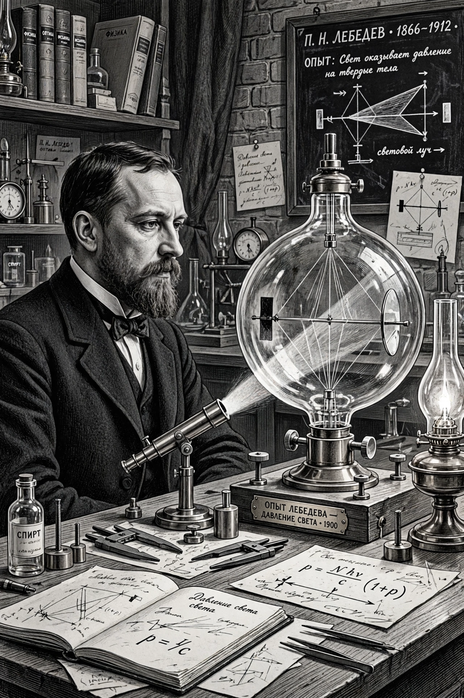

Pyotr Nikolaevich Lebedev (24 February 1866 – 1 March 1912) was a Russian physicist known for first measuring the radiation pressure on solids, confirming a prediction of James Clerk Maxwell's electromagnetic theory. The Lebedev Physical Institute in Moscow is named after him.

Born in Moscow, Lebedev studied engineering, then physics at Strasbourg under August Kundt, receiving his doctorate in 1891. He returned to Moscow University, became professor in 1900, and founded the first Russian school of physics, training many students. In 1911 he resigned with other professors in protest at government interference.
In 1899–1901 Lebedev, using a sensitive torsion balance in vacuum, measured the tiny pressure exerted by light on solid bodies, and in 1907–1910 measured pressure on gases. His results agreed with Maxwell and Bartoli's theory and were internationally celebrated.
The Lebedev Physical Institute (FIAN) of the Russian Academy of Sciences, a crater on the Moon, and a street in Moscow bear his name.